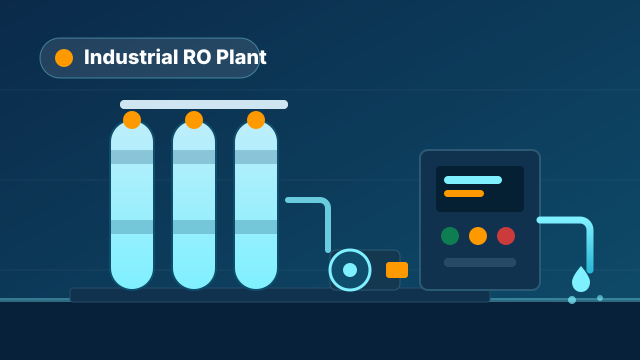

How to Choose an Industrial RO Plant: Capacity, TDS & Cost Guide

Buying an industrial or commercial RO plant but not sure which one fits? The right plant depends on four things — how much water you need (LPH), your feed-water TDS, the water source, and what the output is used for. This guide breaks each one down in plain language so you neither under-size nor over-spend.
1. Capacity (LPH) — how much water do you need?
RO plant capacity is measured in LPH (Litres Per Hour). First work out your daily water requirement (litres/day), then choose the LPH based on how many hours per day the plant will run.
A simple formula: Required LPH = total daily litres ÷ operating hours. For example, if you need 8,000 litres a day and the plant runs 8 hours, you need roughly a 1,000 LPH plant. We always recommend keeping a small margin so the plant can handle future demand without strain.
| Use case | Typical capacity |
|---|---|
| Small office / clinic / café | 100 – 500 LPH |
| Restaurant / hotel / school | 500 – 2,000 LPH |
| Packaged drinking water / factory | 2,000 – 10,000 LPH |
| Large industry / process water | 10,000 – 50,000+ LPH |
2. Feed-water TDS — the most important factor
TDS (Total Dissolved Solids) tells you how many salts are dissolved in your water. This number affects the RO design the most — the membrane type, pump pressure and recovery rate all depend on it.
- Below 500 TDS: light treatment, lower pressure — the plant costs less.
- 500 – 2,000 TDS: standard brackish-water RO — most borewells fall here.
- 2,000 – 5,000+ TDS: needs high-rejection membranes and higher pressure — design must be done carefully.
3. Water source — borewell, municipal or recycled?
Pre-treatment depends on the source:
- Borewell: often has hardness, iron and high TDS — may need a softener or iron-removal pre-treatment.
- Municipal: contains chlorine that damages membranes — a carbon filter is essential.
- Recycled / RO reject: the hardest to treat — needs a special design.
4. What is the output used for?
Drinking water, boiler feed, pharma, or process water — each use has its own quality requirement. Boiler and pharma need very low TDS, while normal drinking water doesn't need to be that strict. Telling us the end use lets us design the right membrane and stages.
What's inside an RO plant?
A complete industrial RO plant usually includes: a raw-water pump, sand/carbon pre-filters, a micron cartridge filter, an antiscalant dosing pump, a high-pressure pump, RO membranes with housings, and a control panel. Using good-brand vessels and membranes keeps the plant running reliably for years.
What affects the cost?
An RO plant's price is not a fixed number — it depends on capacity, feed TDS, automation level (manual vs auto) and material (FRP vs SS). That's why an accurate quotation is only possible once you share your capacity and water details.
Frequently Asked Questions
What is the price of an RO plant?
The price depends on capacity (LPH), feed TDS and automation. Share your requirement by call or WhatsApp and we'll send an exact quotation. (Prices are exclusive of GST.)
What capacity do I need?
Tell us your daily litre requirement and operating hours, and we'll calculate the right LPH for you.
Do you provide installation and AMC?
Yes. We manufacture the plant, install it, and also offer an annual maintenance contract (AMC).
← Back to all blogs